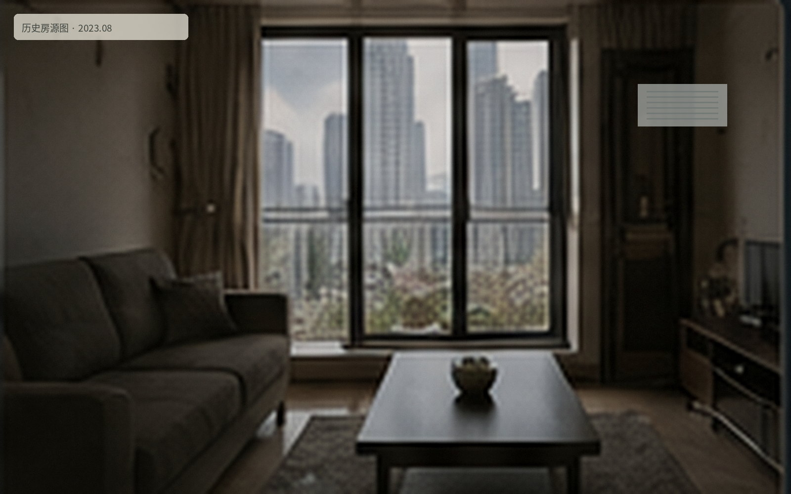

历史页面该房源已于 2023-12-19 下架。页面仅保留历史图片与基础描述，原预约、签约与住户信息不再提供。 历史图片 · 拍摄时间未保留 · 原图已压缩归档 A栋 1404 · 单间历史字段归档值面积约 18㎡朝向东侧高窗租赁方式运营内部短租登记页面状态历史房源，不再接受预约 历史住户留言节选“房间不大，但窗外能看到高架尽头的灯。晚上回来晚，走廊很安静。”留言时间：2023-08 · 昵称信息已根据隐私规则移除 同楼层失物记录 · 内容归档说明本页面内容最后更新于 2023-12-20